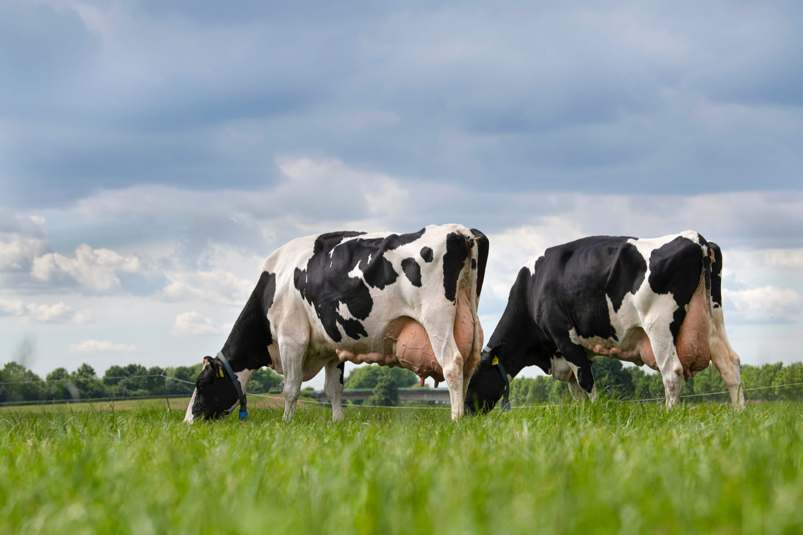

Pecuária leiteira
Cólegio Estadual Monsenhor Pedro Busko
Luisa Bertussi
O Que é?
Pecuária de leite é a criação de gado com o objetivo de produção de leite, em sua maioria para a indústria de laticínios.

Raça principal
Holandês